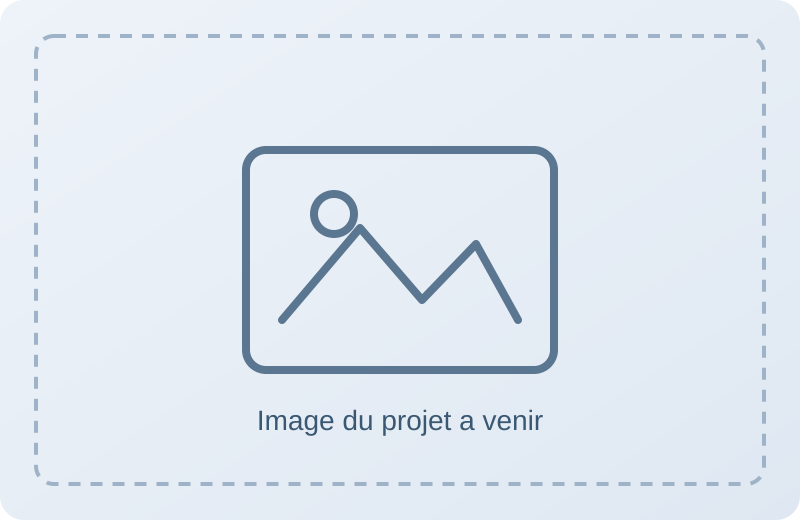
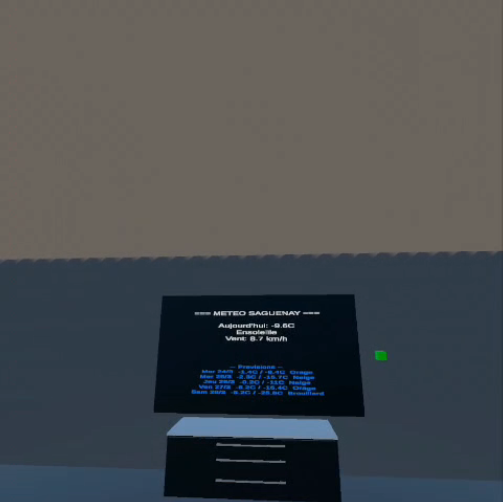

Un aperçu de mes réalisations académiques et personnelles, avec des projets orientés base de données, game design et expériences immersives.
Cartographie forestière du Livradois-Forez
Ce projet vise à fournir une cartographie des arbres pour l'association du Livradois-Forez. L'application permet de consulter les informations liées aux essences et aux maladies, puis d'ajouter, modifier ou supprimer des entrées selon les besoins du suivi terrain.
Le travail d'équipe a abouti à plusieurs livrables complémentaires : une application mobile en Kotlin, une application web en PHP, une application d'administration en Blazor et une API pour relier l'ensemble.
J'ai principalement travaillé sur le système de connexion des comptes côté PHP ainsi que sur la gestion des données relatives aux arbres en EF. Ma contribution a été interrompue en cours de projet en raison de mon départ pour le semestre au Canada.
Projet réalisé en groupe de 5 sous Unity3D, autour d'une expérience immersive orientée ambiance et exploration.
À ce stade, les décors sont créés et la mise en place des éléments interactifs est en cours d'implémentation dans la scène.
Les mécaniques principales déjà définies sont la téléportation, les interactions avec des éléments du décor et des événements déclenchés à des moments clés du parcours joueur.
Technologies utilisées : Unity3D.

Décor et ambianceTéléportation et interactionsÉvénements scénarisés
Station météo VR connectée à une API
Projet réalisé sous Unity avec une logique orientée prototype fonctionnel : l'objectif principal était de récupérer des données météo via une API puis de les afficher dans un environnement VR.
La partie visuelle était volontairement secondaire. L'information météo devait surtout être lisible et visible dans la scène, notamment sur une télévision placée dans un salon virtuel.
Le résultat final permet d'afficher dynamiquement les données météo dans l'univers 3D et de valider l'intégration bout en bout entre Unity et l'API.
Technologies utilisées : Unity3D, API météo (requêtes HTTP/JSON).
Vue générale du salon VRAffichage météo sur la télévisionVariation des informations météo

Prototype final intégré à la scène
Projet de conception de jeu vidéo
Projet solo de conception de jeu vidéo autour de Yume no Fukushuu, pensé comme une expérience d'action-aventure sur PC et consoles.
L'objectif était d'imaginer un concept complet et de le formaliser dans un one-pager clair. Le projet comprend également tout un lore original, plus détaillé que ce qui est présenté dans le document de synthèse.
Le concept intègre 5 boss principaux et met l'accent sur la cohérence entre narration, univers et intentions de gameplay.